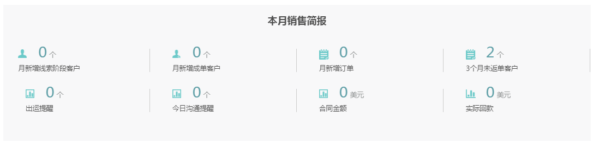
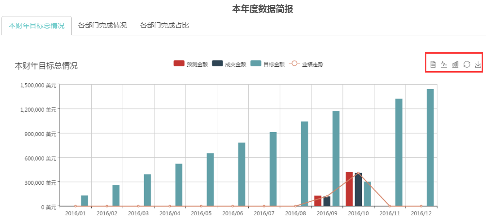
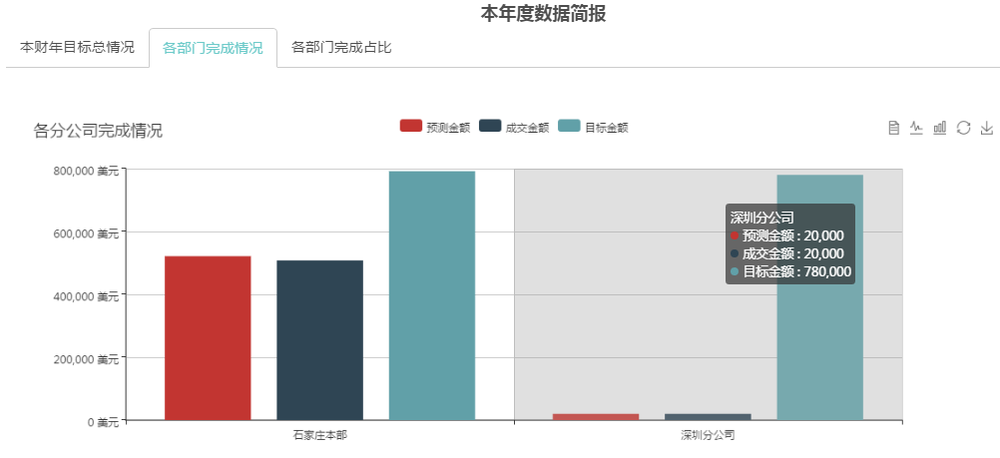
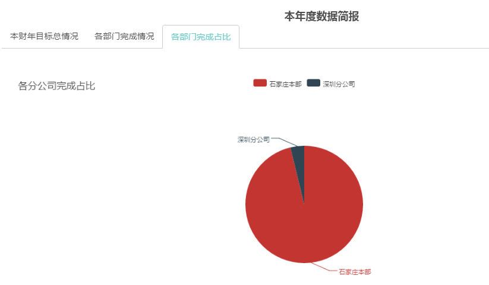

展示公司本年度业绩完成情况、本月业绩完成情况以及以及各分公司本年度业绩完成情况。

本年度数据简报中，本财年目标总情况显示公司本年度个月预测金额，成交金额，与设定的目标金额情况，并显示业绩走势。
各分公司本年度业绩完成情况。从图上点击相应的分公司可以进入分公司数据看板，可以看到该分公司本年度各月业绩完成情况及各业务团队完成占比。
以上两图的显示形式还可以切换为数据视图，折现图，柱状图。


各分公司完成占比图可以看到本年度各分公业绩总额以及占比情况，点击相应分公司也可进入分公司数据看板，看到该分公司本年度各月业绩完成情况及各业务团队完成占比。
